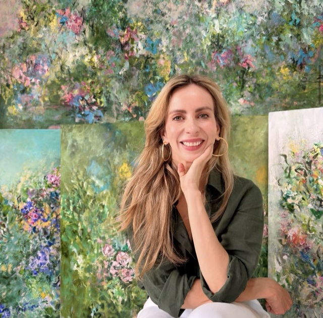

Visual artist
Rocío Villamizar

I am a Colombian–Costa Rican visual artist with more than 18 years of artistic practice. My experiences in Latin America, the Caribbean and England have enriched the way I observe, interpret and represent the world.
Nature is the central axis of my work. Through it I explore memory, the passage of time, fragility and the human capacity for transformation.
My creative process is intuitive. I build my compositions through layers of color, texture and gesture, finding a balance between the spontaneous and the intentional, between abstraction and figuration.
My gardens are emotional landscapes that go beyond the visible. In them, nature becomes a language that speaks of childhood, affection, hope and renewal. The human figures that inhabit some of my works stand for our connection with that universe.
More than representing a landscape, I want to awaken sensations, create connections and offer the viewer a space for contemplation and for meeting oneself.
In the studio


Exhibitions
- 2026Next · December 3Fragmentos de un jardínGalería Nacional, Museo de los Niños · San José, Costa Rica
- 2026Concorso Internazionale di Pittura, Nelvis FormasinRome, Italy
-
2026
Banco de Costa Rica, Siegfried Schosinsky GalleryCosta RicaOrigen: the opening at the bank’s gallery.


- 2026Juan Santamaría Airport, VIP loungeBAC Credomatic
- 2025Biennale Internazionale d’Arte della Riviera RomanaRome, Italy
- 2025Juan Santamaría Airport, VIP loungeBAC Credomatic
- 2025Galería TaletumSan José, Costa Rica
- 2024Juan Santamaría Airport, VIP loungeBAC Credomatic
- 2023Juan Santamaría Airport, VIP loungeVisa
- 2022FN ART GalleryLindora, Costa Rica
- 2021The Golden Ratio, Palazzo RuspoliRome, Italy
- 2018Parque LageRio de Janeiro, Brazil
- 2018ScenariumRio de Janeiro, Brazil
- 2017ScenariumRio de Janeiro, Brazil
- 2016EmbrujarteCosta Rica
- 2015Art Walk, Avenida EscazúCosta Rica
- 2014EmbrujarteCosta Rica
- 2013Cariocarte, Fundación de BrasilCosta Rica


Studies and courses
- 2026Color Laboratory
- 2023Seminar with Alejandro Rosenberg
- 2022Psychology of ArtUniversidad Creativa de Costa Rica
- 2021Workshops with Costa Rican artist Olga Duarte
- 2018Parque LageRio de Janeiro, Brazil
- 2017Parque LageRio de Janeiro, Brazil
- 2016London Atelier of Representational ArtLondon, England
- 2012Parque LageRio de Janeiro, Brazil
More of my art
You can find more about my art on my website and on my social media.
www.rocioarts.com Instagram · rocioarts Facebook · Rocioarts
If you would like a work, or to see the studio, write to me.
WhatsApp